Super Saiyan : de la légende aux paliers de puissance
Comment Toriyama a progressivement redéfini les règles de la transformation au fil de l’écriture de Dragon Ball.
Par Mihawkis
Comment devient-on un Super Saiyan ?
Du sang saiyen, un entraînement rigoureux, une puissance suffisante et une explosion de colère : voilà, en substance, les ingrédients que nous avons retenus. Pourtant, lorsqu’on relit le manga dans son ordre d’écriture, on s’aperçoit que la réponse a considérablement évolué.
Avant de devenir une transformation reproductible, déclinée en plusieurs niveaux, le Super Saiyan fut une hypothèse, une légende, puis l’incarnation d’un guerrier exceptionnel.
Je vous propose de retracer la genèse de ce concept, en nous replaçant dans la position du lecteur qui découvre le manga au fil de sa publication. Nous verrons ensuite pourquoi, depuis mon enfance, j’interprète les transformations comme des paliers de puissance, mais aussi comme des outils au service de la narration.
Aux origines : la piste du métissage
La première évocation du Super Saiyan intervient beaucoup plus tôt que la plupart des lecteurs ne s’en souviennent. Raditz vient de découvrir, à ses dépens, l’incroyable potentiel du fils de Son Goku. Un enfant de quatre ans est parvenu, sous l’effet de la colère, à déployer une puissance supérieure à celle de son père.
Vegeta émet alors une hypothèse : le mélange des sangs saiyen et terrien pourrait donner naissance à des métis surpuissants. Nappa évoque aussitôt les Super Saiyans et la possibilité de restaurer l’ancienne suprématie de leur peuple.
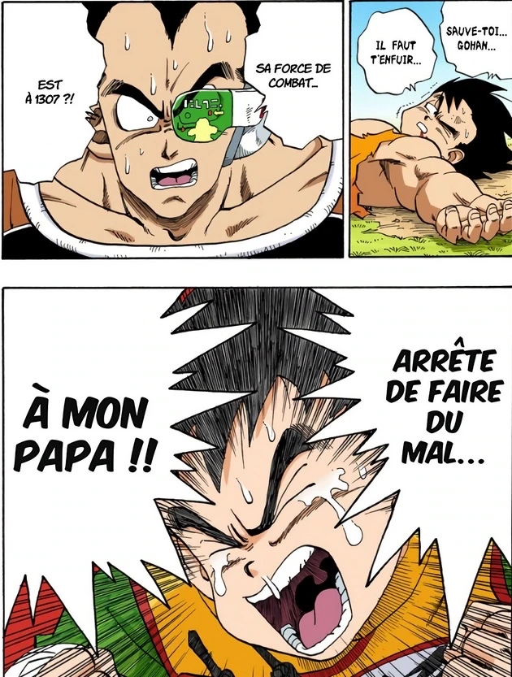
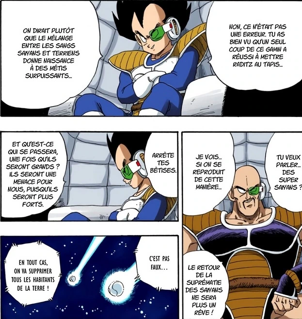
Cette conversation est particulièrement intéressante lorsqu’on s’efforce d’oublier tout ce que nous apprendrons par la suite. À ce stade, il n’est pas question de transformation physique. Le métissage semble être une piste privilégiée, une ancienne suprématie des Saiyans est évoquée, et Gohan apparaît comme un candidat naturel à cette nouvelle catégorie de guerriers.
Toriyama envisageait-il alors de faire de Gohan le véritable Super Saiyan ? Impossible de l’affirmer. Mais la première évocation du concept est directement associée à son potentiel exceptionnel.
Et si les Super Saiyans avaient déjà existé, d’où venaient-ils ? Étaient-ils eux-mêmes issus d’un métissage avec un autre peuple ? Les contours du concept restent encore très flous.
Réflexe du DragonBallogueSe replacer dans le temps de l’écriture
Nous connaissons aujourd’hui l’apparence et les caractéristiques du Super Saiyan. Mais le lecteur de cette époque ne les connaissait pas.
Gardons-nous de projeter sur les premières évocations du concept les informations que Toriyama introduira plus tard. Ce que nous savons à la fin de l’œuvre n’est pas nécessairement ce que l’auteur avait déjà défini au moment où il l’écrivait.
L’étrange construction d’une légende
Le rendez-vous manqué de Dodoria
Il y a, dans la narration de l’arc Namek, un détail qui m’a toujours étonné. Lorsque Dodoria révèle à Vegeta la véritable raison de la destruction de sa planète, il explique que Freezer craignait une éventuelle rébellion des Saiyans. Pris individuellement, ils ne constituaient pas une menace suffisante. Mais leur nombre, leur potentiel de progression et l’apparition de guerriers particulièrement puissants devenaient préoccupants.
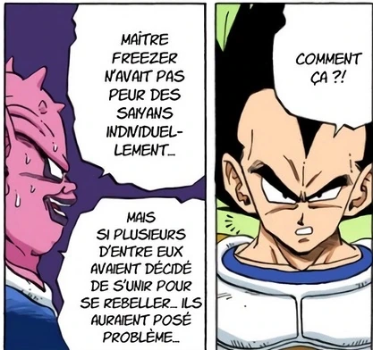
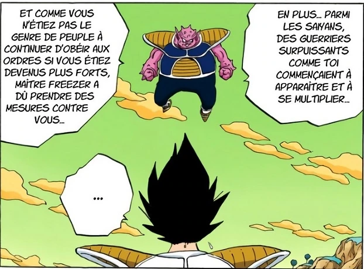
Or, il manque ici une information que nous considérons aujourd’hui comme fondamentale : la peur de voir apparaître le Super Saiyan légendaire. Cette révélation aurait constitué une occasion idéale de faire planer cette menace sur l’ensemble de l’arc. Pourtant, Toriyama ne le fait pas.
Le TV Special consacré à Baddack reprend essentiellement l’idée d’un peuple devenu gênant pour Freezer, sans faire de la légende le moteur explicite du récit. Toriyama avait-il oublié la conversation entre Nappa et Vegeta ? N’avait-il pas encore arrêté son choix quant à la nature du Super Saiyan ? Je n’ai pas de réponse définitive, mais ce silence est intéressant.
Vegeta, le principal porteur de la légende
C’est essentiellement à travers Vegeta que le lecteur découvre la légende. Un Super Saiyan n’apparaîtrait qu’une fois tous les mille ans. Il serait capable de franchir les limites qu’aucun guerrier d’élite n’a pu dépasser. Pourtant, Vegeta ne semble pas connaître les conditions permettant de le devenir.
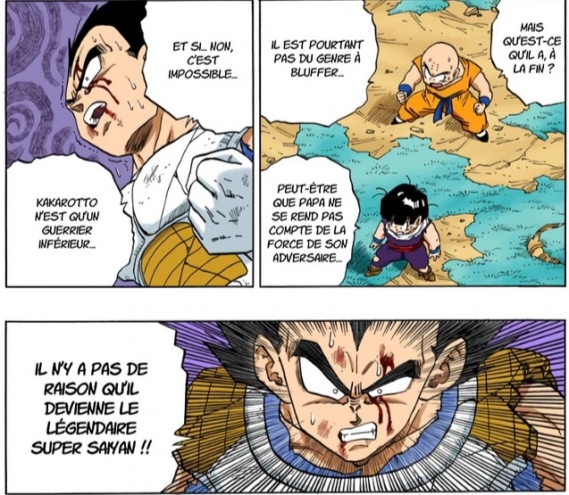
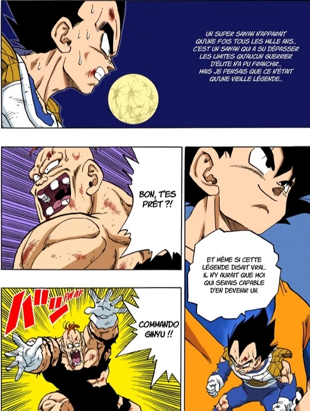
Plus tard, après avoir lui-même considérablement augmenté sa puissance, Vegeta se persuade d’être devenu ce guerrier légendaire. Pourquoi ? Il ne s’est pas transformé, son apparence n’a pas changé. Il a simplement repoussé une nouvelle fois ses limites. Dans son esprit, le Super Saiyan semble encore se définir par un degré de puissance exceptionnel.
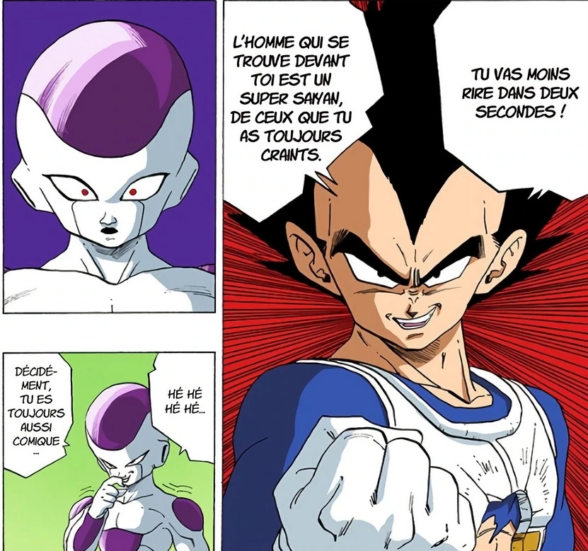
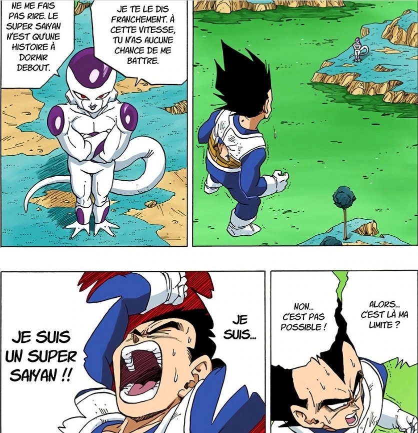
Après sa défaite, il reporte finalement ses espoirs sur Goku. Il complète alors la révélation de Dodoria en associant la destruction de son peuple à la peur de Freezer de voir apparaître le guerrier légendaire. Ce dernier ne confirme pas explicitement cette version, mais ne la réfute pas non plus à cet instant.
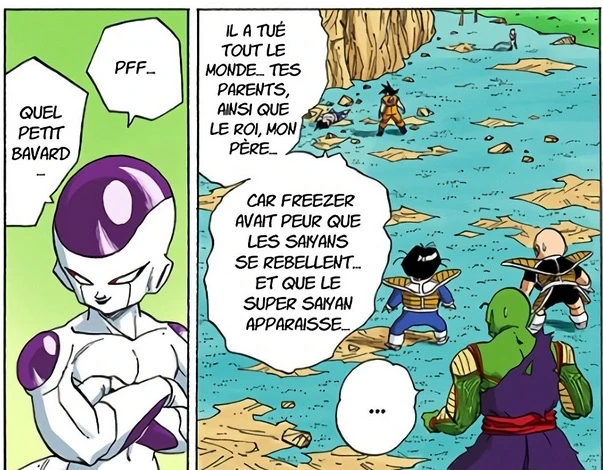
Voir les autres cases du manga +
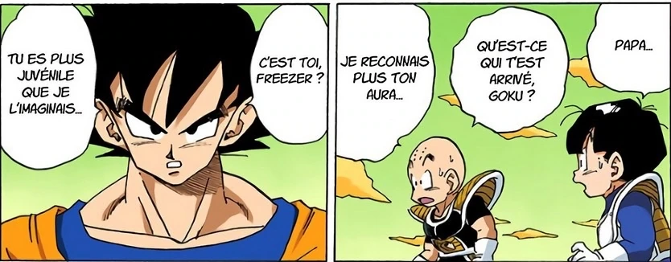
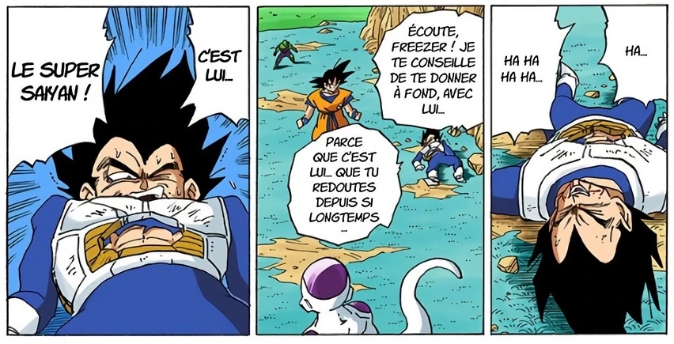
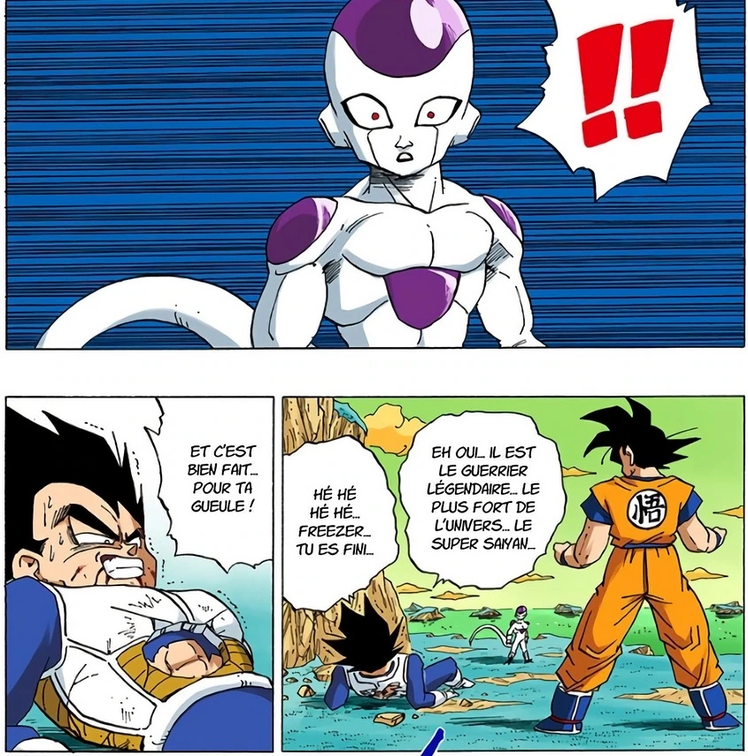
Une transformation que personne ne semble connaître
Lorsque Goku se transforme enfin, Freezer ne comprend pas ce qui vient de se produire. À sa connaissance, les Saiyans ne sont capables que de se transformer en singes géants. Connaître la légende ne signifie donc pas nécessairement savoir qu’elle correspond à une transformation physique.
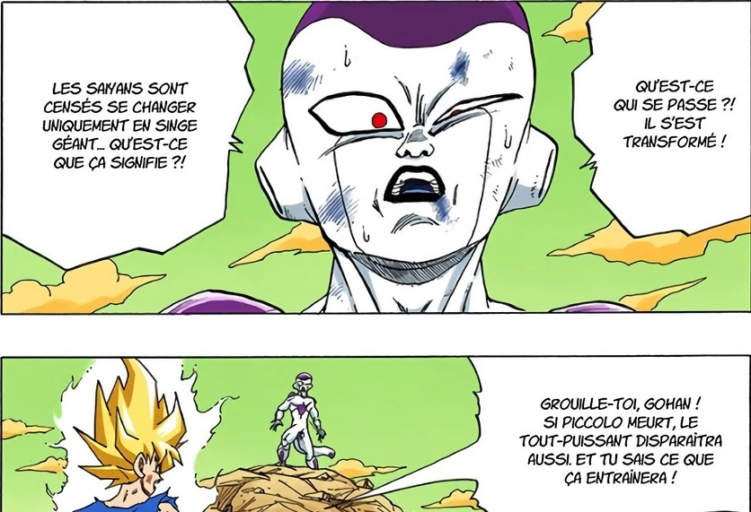
C’est à ce moment que Toriyama donne au concept son identité visuelle : les cheveux dorés, les yeux clairs, l’aura et une puissance extraordinaire. La mort de Krilin agit comme déclencheur émotionnel. Mais le lecteur ne dispose pas encore d’un mode d’emploi universel.
De la légende à la méthode
Trunks, ou la fin de l’unicité
À peine l’arc Namek terminé, Toriyama introduit un deuxième Super Saiyan. Ce qui constituait l’aboutissement d’une légende millénaire devient soudain une capacité que plusieurs individus peuvent posséder simultanément. Pour le lecteur de l’époque, c’est une rupture considérable. Il ne s’agit plus seulement d’expliquer pourquoi Goku est devenu le Super Saiyan, mais comment d’autres peuvent le devenir à leur tour.
Notion du cursus · RéécritureLe tisserand à l’œuvre
Toriyama ne supprime pas le Super Saiyan créé sur Namek. Il en conserve l’apparence et redéfinit progressivement sa portée : le concept demeure, sa fonction évolue.
La réécriture peut prendre la forme d’une redéfinition plutôt que d’une contradiction frontale. L’arrivée de Trunks invite à examiner cette possibilité, sans prouver à elle seule ce que Toriyama avait prévu ou non.
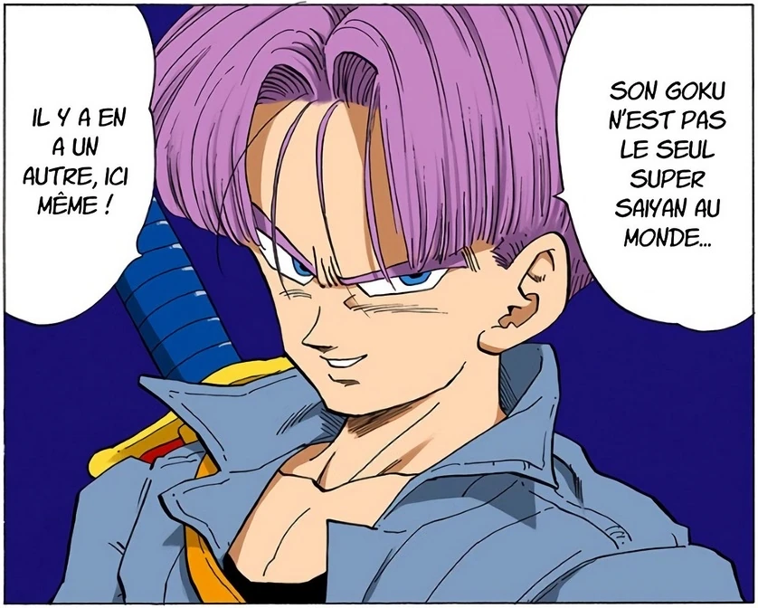
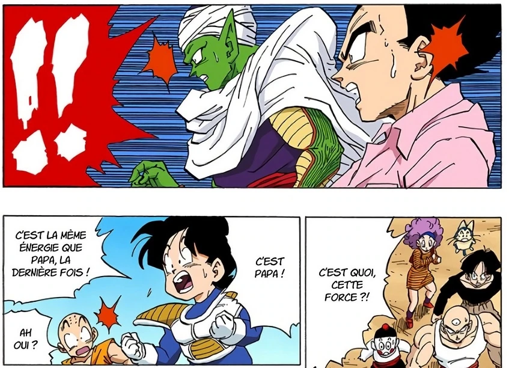
Vegeta et la pureté du cœur : une belle pirouette
Lorsque Vegeta révèle qu’il est lui aussi devenu un Super Saiyan, Krilin est stupéfait. Il pensait qu’il fallait être de nature paisible. Mais d’où tient-il cette information ? Est-ce une règle découverte entre les deux arcs, ou une déduction fondée sur la personnalité de Goku ?
Vegeta lui répond en jouant sur la notion de pureté : on peut également être pur dans ses intentions maléfiques. Je trouve cette pirouette assez savoureuse. L’exigence morale laisse place à l’intensité des sentiments et de la volonté. Vegeta raconte aussi avoir suivi un entraînement infernal, jusqu’à prendre conscience de ses propres limites.
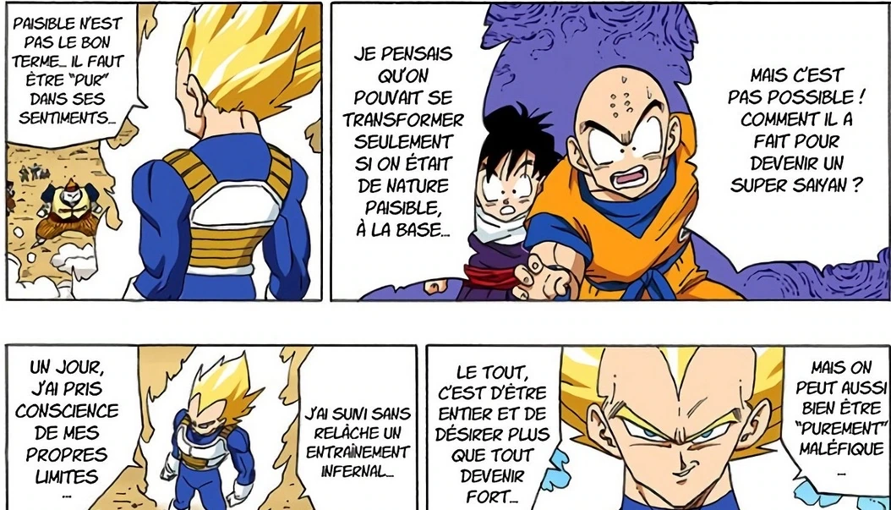
Une première méthode commence à se dessiner : posséder du sang saiyen, développer sa puissance par l’entraînement, puis provoquer un bouleversement émotionnel suffisamment intense. Le Super Saiyan devient un objectif à atteindre.
Gohan : la transformation devient un apprentissage
Lorsque Goku entraîne son fils, il considère sa transformation comme un objectif accessible, et même comme un préalable à leur véritable entraînement. Il lui explique que l’augmentation volontaire de sa force ne suffit pas : il doit parvenir à libérer sa colère, en imaginant par exemple la mort de ses proches.
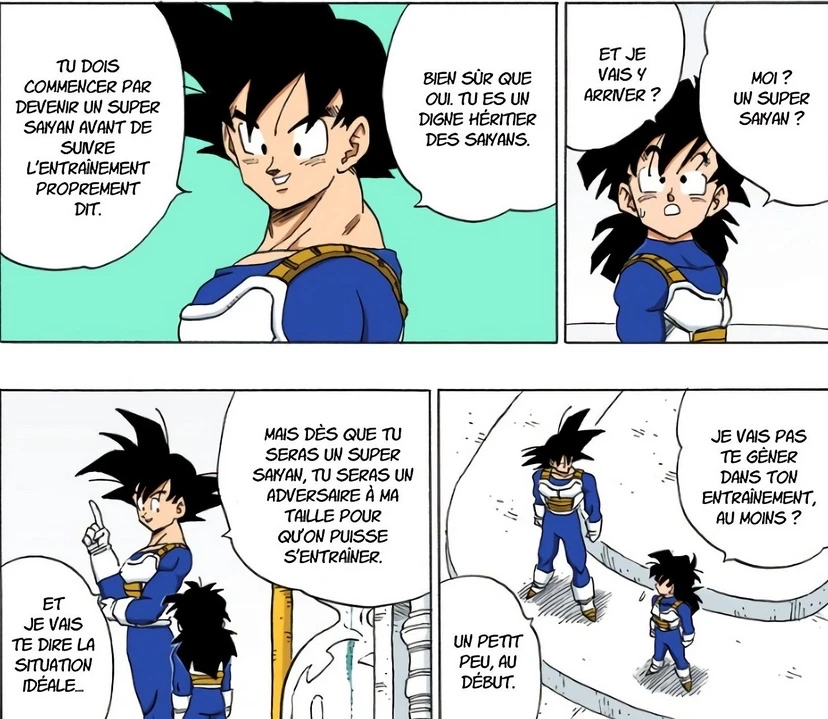
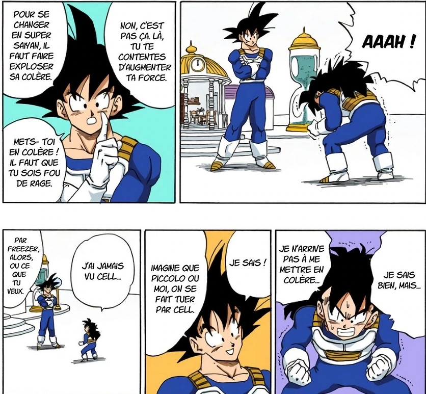
Voir les autres cases du manga +
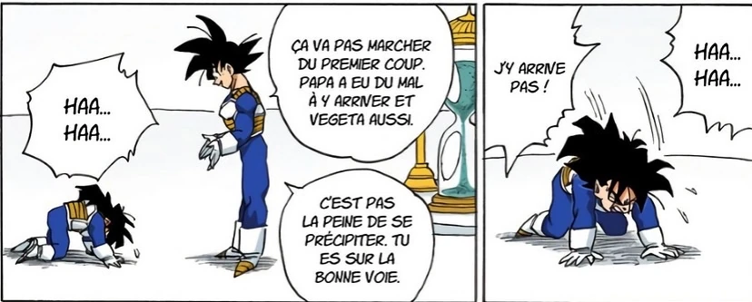
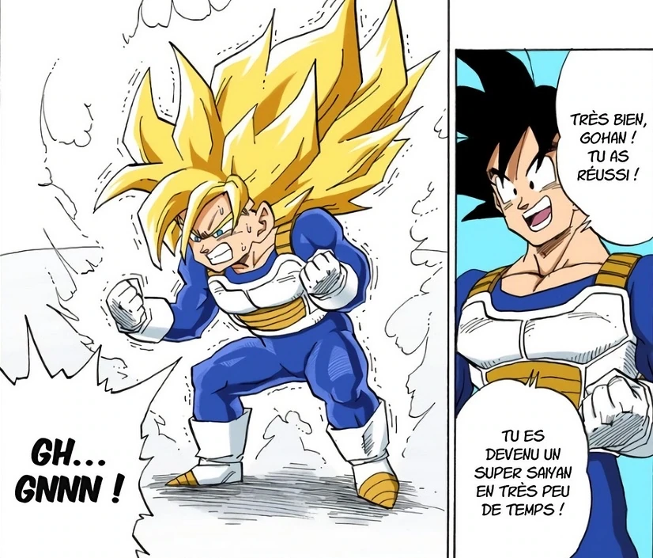
La colère, jusqu’ici associée à des événements dramatiques, devient quelque chose que l’on peut chercher à provoquer artificiellement dans le cadre d’un entraînement. Le Super Saiyan est désormais une capacité qui peut s’apprendre, se travailler et se maîtriser.
Le cas particulier du Super Saiyan 2
La transformation de Gohan contre Cell constitue un nouvel événement exceptionnel. Elle s’inscrit dans une construction narrative qui remonte à sa petite enfance : son potentiel immense, son refus de la violence et ses explosions de puissance sous l’effet de la colère. Lors du Cell Game, cette particularité trouve enfin son aboutissement.
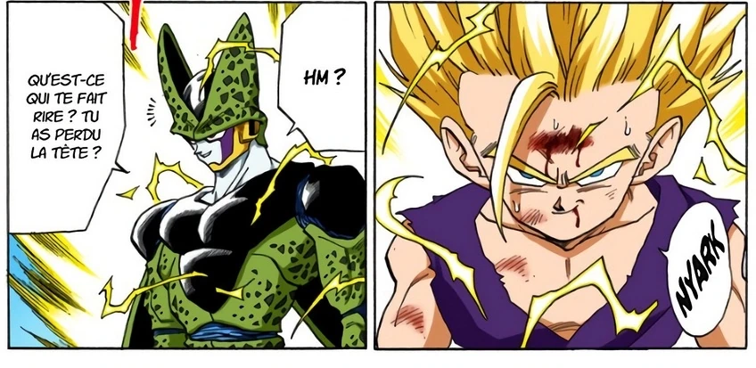
Mais, comme pour le premier Super Saiyan sur Namek, ce moment exceptionnel finira lui aussi par devenir un niveau de puissance reproductible.
Le Super Saiyan entre en période de soldes
Sept années d’entraînement suffisent-elles ?
Sept ans se sont écoulés depuis la mort de Cell. Gohan a négligé son entraînement, tandis que Goku et Vegeta ont continué à progresser. Tous deux sont désormais capables de combattre au niveau du Super Saiyan 2, sans que le manga nous raconte les circonstances exactes de l’obtention de cette transformation.
Aucune nouvelle tragédie comparable à celle de Gohan ne nous est présentée. L’entraînement et les années écoulées suffisent à la narration, même s’il faut tenir compte de l’intervention de Babidi dans le cas de Vegeta. Ce qui était autrefois exceptionnel devient un palier de référence.
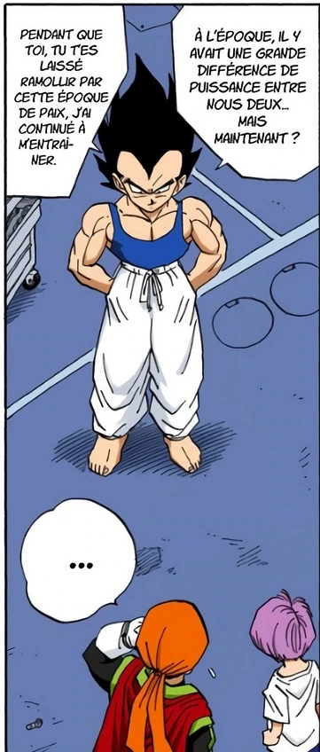
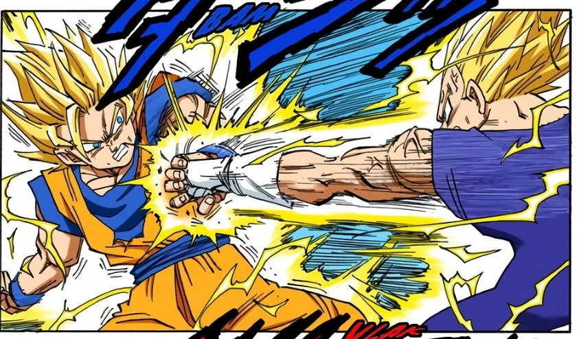
Goten et Trunks : la banalisation assumée
Gohan explique à Goten qu’il faut suivre un entraînement particulièrement rigoureux, puis faire exploser sa colère. Goten se transforme presque aussitôt devant lui. Depuis quand en est-il capable ? Il ne s’en souvient même plus.
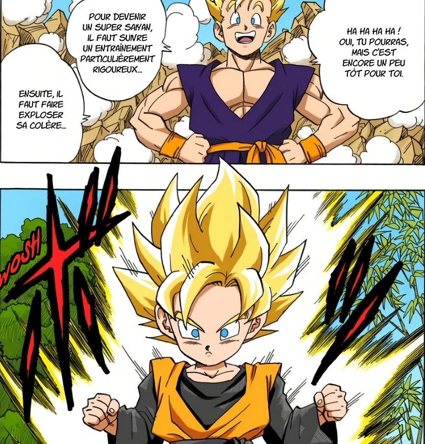
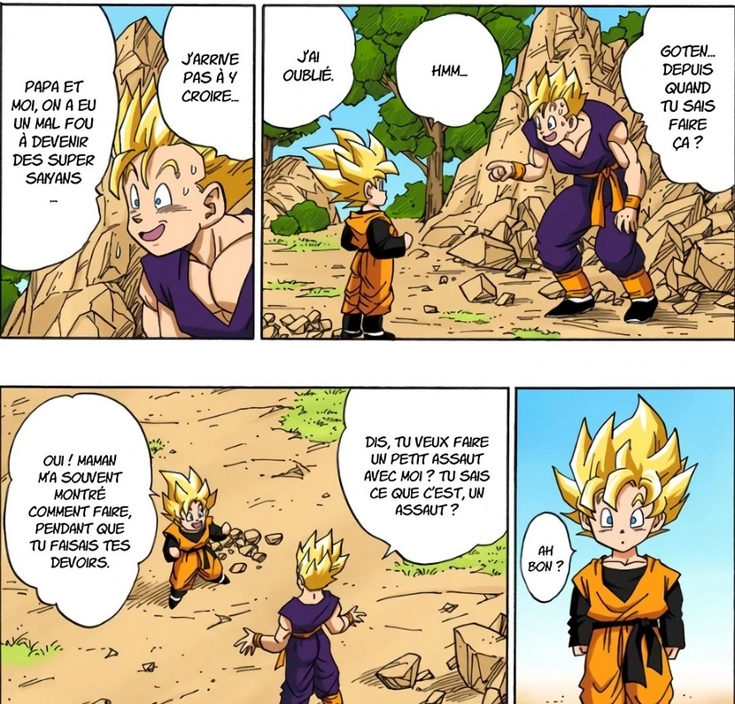
Vegeta fait ensuite la même découverte avec son propre fils. Lui qui a consacré tant d’efforts à devenir le guerrier légendaire voit un enfant se transformer avec une facilité déconcertante.
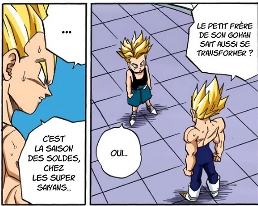
Voir les autres cases du manga +
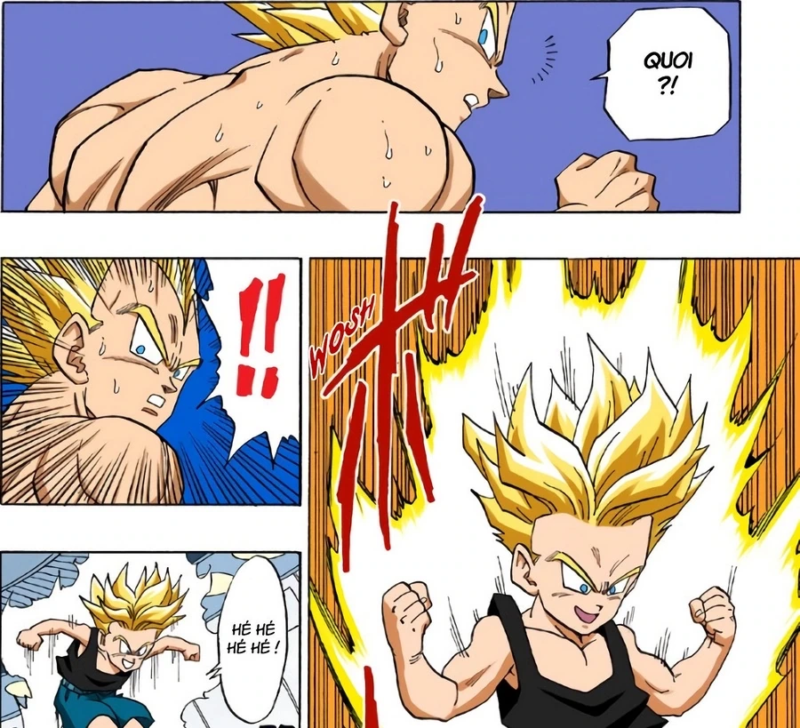
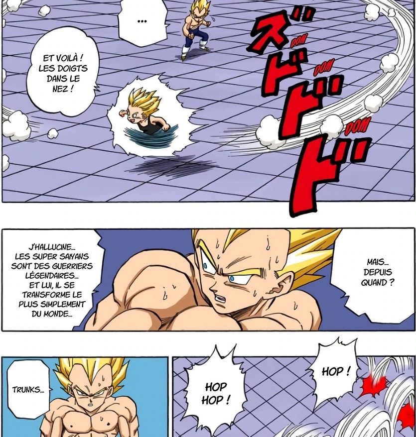
J’aime particulièrement cette réplique sur les soldes chez les Super Saiyans, parce que j’y vois une forme d’autodérision. Toriyama sait ce que représentait autrefois la transformation. Au lieu de chercher à dissimuler le contraste avec les efforts consentis par les aînés, il en fait un gag.
Notion du cursus · Registres narratifsLe gag comme révélateur de l’écriture
Là où le lecteur pourrait attendre une longue justification de la facilité avec laquelle les enfants se transforment, Toriyama choisit l’humour. Le contraste entre le caractère légendaire de la transformation sur Namek et sa banalisation dans l’arc Buu devient la matière du gag.
Reconnaître le registre d’une scène permet de distinguer son effet comique d’une éventuelle explication des règles de l’univers.
Gotenks et le Super Saiyan 3
Goku a consacré plusieurs années à atteindre ce niveau. Gotenks, lui, y parvient en quelques jours. Lorsque Piccolo lui demande comment il réussit cet exploit, Gotenks est incapable de fournir une véritable explication. Même Goku s’étonne de cette rapidité.
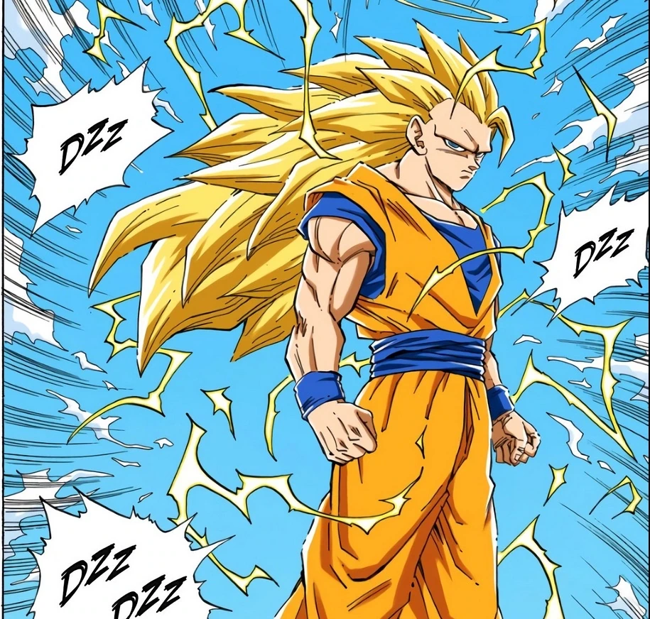
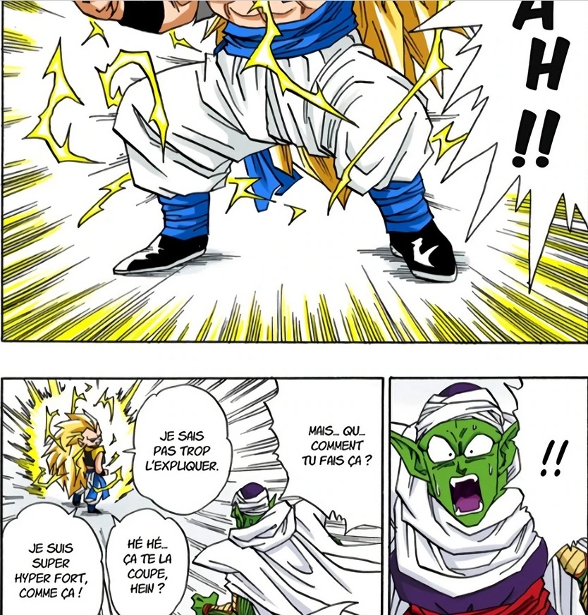
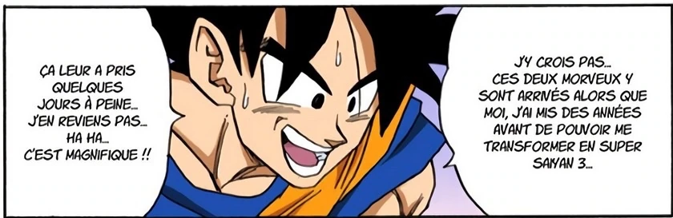
Pour ma part, je considère que la fusion apporte un élément de lecture intéressant : Gotenks dispose d’une puissance considérable et se trouve, dans mon interprétation, naturellement plus proche du seuil nécessaire au Super Saiyan 3. Mais le plus intéressant demeure la manière dont Toriyama traite cette progression. Il a besoin de faire de Gotenks un adversaire crédible face à Buu. Le Super Saiyan 3 lui permet précisément d’accomplir cela.
Les anciennes étapes du héros deviennent des raccourcis
Bien avant l’apparition des Super Saiyans, Toriyama utilisait déjà un procédé narratif très similaire. Lorsque Goku poursuit sa progression, ses anciens compagnons doivent régulièrement rattraper une partie de leur retard pour participer aux nouvelles intrigues.
Comment Toriyama nous le fait-il comprendre ? En leur faisant suivre le sillage du héros.
- L’école de la Tortue.
- L’entraînement auprès de Kami-sama.
- L’entraînement auprès de Kaio.
Ces étapes servent de repères au lecteur. Il n’est pas nécessaire de raconter à nouveau l’intégralité de chaque apprentissage. Le parcours de Goku devient une référence permettant de situer la progression des autres personnages.
À mes yeux, les transformations prolongent exactement ce principe. La transformation de Goku sur Namek devient le niveau que les autres Saiyans doivent atteindre pour participer à l’arc Cell. L’explosion de colère de Gohan contre Cell devient le Super Saiyan 2, que Goku et Vegeta peuvent ensuite atteindre à leur tour. Le Super Saiyan 3 permet à Gotenks d’intégrer une nouvelle catégorie de combattants.
Grille de lecture DragonBallogyLa dévaluation narrative : le cycle de l’exception
Une transformation peut perdre son caractère exceptionnel sans perdre sa puissance. C’est sa valeur dans le récit qui évolue. Ce cycle propose une manière de lire cette évolution :
- L’exceptionUn événement extraordinaire : Goku sur Namek.
- La reproductibilitéTrunks, Vegeta, puis Gohan y accèdent.
- La banalisationUn acquis que le récit n’a plus besoin de réexpliquer.
- Le dépassementUne nouvelle exception apparaît, puis peut à son tour devenir un repère.
On peut retrouver un procédé comparable dans les anciens entraînements de Goku : le parcours du héros sert ensuite de raccourci pour ses compagnons.
La « dévaluation narrative » désigne ici un outil d’analyse proposé par DragonBallogy, non une règle énoncée par Toriyama.
Comment fonctionnent ces paliers ?
Depuis mon enfance, j’utilise une grille de lecture relativement simple pour donner une cohérence globale aux différentes transformations. Je considère que chacune correspond à un seuil minimal de puissance.
Trois seuils théoriques
Exemple fictif : SSJ 1 = 5 millions ; SSJ 2 = 20 millions ; SSJ 3 = 40 millions. Ces valeurs n’ont rien d’officiel et ne constituent pas des multiplicateurs.
Plus un Saiyan est puissant, plus il se rapproche, dans mon modèle, du seuil qui lui permet d’accéder à la transformation suivante. Cela n’implique pas que tous les Super Saiyans possèdent exactement la même force : un palier constitue un minimum, pas un plafond.
Modèle personnel · PuissanceDistinguer la condition du déclencheur
Dans cette grille de lecture, la puissance suffisante constitue la condition d’accès à un palier ; l’émotion peut être le déclencheur qui permet de le franchir. Le déclencheur n’est pas nécessairement identique pour tous les personnages.
Modèle interprétatif : le manga ne démontre pas l’existence de seuils universels chiffrables. La capacité d’une hypothèse à éclairer plusieurs scènes ne suffit pas à en faire une vérité officielle.
Pourquoi Goten et Trunks peuvent-ils se transformer ?
Selon cette grille de lecture, ils sont déjà suffisamment puissants pour accéder au premier palier. Leur affrontement contre C-18, sous le déguisement de Mighty Mask, fournit d’ailleurs un indice de leur niveau de puissance considérable, sans permettre de le chiffrer précisément.
On pourrait évidemment expliquer leur facilité par leur métissage. Mais si le manga évoque très tôt le potentiel des métis, il ne nous dit pas explicitement que cette particularité explique la facilité avec laquelle Goten et Trunks deviennent des Super Saiyans. Contrairement à Gohan, les deux enfants n’ont pas bénéficié d’une construction narrative comparable.
Ils bénéficient avant tout d’un privilège autrement plus efficace : le pouvoir du scénario. Toriyama a besoin d’eux pour participer à la nouvelle intrigue. Il ne va pas consacrer dix années supplémentaires à leur entraînement pour leur permettre d’atteindre une transformation que le lecteur connaît déjà depuis plusieurs arcs.
Pourquoi les anciens Saiyans ne se transformaient-ils pas ?
Si devenir un Super Saiyan ne nécessite que de s’entraîner et de se mettre en colère, comment expliquer qu’une civilisation entière de guerriers n’ait pas produit davantage de Super Saiyans ? Ils vivent dans la violence, connaissent la rage, la défaite et la mort de leurs compagnons. Prenons simplement le cas de Baddack : pourquoi les événements qu’il traverse ne suffisent-ils pas à provoquer sa transformation ?
Dans mon modèle, ces guerriers n’avaient pas atteint le seuil de puissance nécessaire. La colère seule ne suffit donc pas : elle peut constituer un déclencheur, mais encore faut-il disposer d’une puissance suffisante pour franchir le palier.
Cette hypothèse ne résout pas nécessairement toutes les difficultés du manga, mais permet de comprendre son évolution générale sans multiplier les explications alambiquées.
Conclusion — L’exception d’hier devient la norme de demain
Le Super Saiyan a connu plusieurs vies au cours de l’écriture de Dragon Ball. D’abord associé au potentiel des métis, il devient une légende millénaire, puis une transformation reproductible, une méthode d’entraînement et enfin un système de progression par niveaux.
Cette évolution nous renseigne autant sur le fonctionnement du manga que sur la manière de travailler de son auteur. Toriyama réutilise ses propres créations et les adapte aux besoins des nouvelles intrigues.
Ce modèle des paliers n’est pas une règle officielle du manga. C’est ma grille de lecture personnelle. Mais elle me paraît cohérente avec un procédé que Toriyama utilise depuis les premières aventures de Goku.
Dans Dragon Ball, l’exception d’un arc devient la référence du suivant.
À toi de jouer — as-tu suivi le raisonnement ?
Mini-quiz de lecture, sans compte ni récompense en zénis.
Illustrations : extraits du manga Dragon Ball, Akira Toriyama / Shueisha, fournis par l’auteur de l’article. Analyse limitée au manga original ; les explications ultérieures ne sont pas traitées ici. Cliquer sur une case pour l’agrandir.
↑ Retour au début de l’article